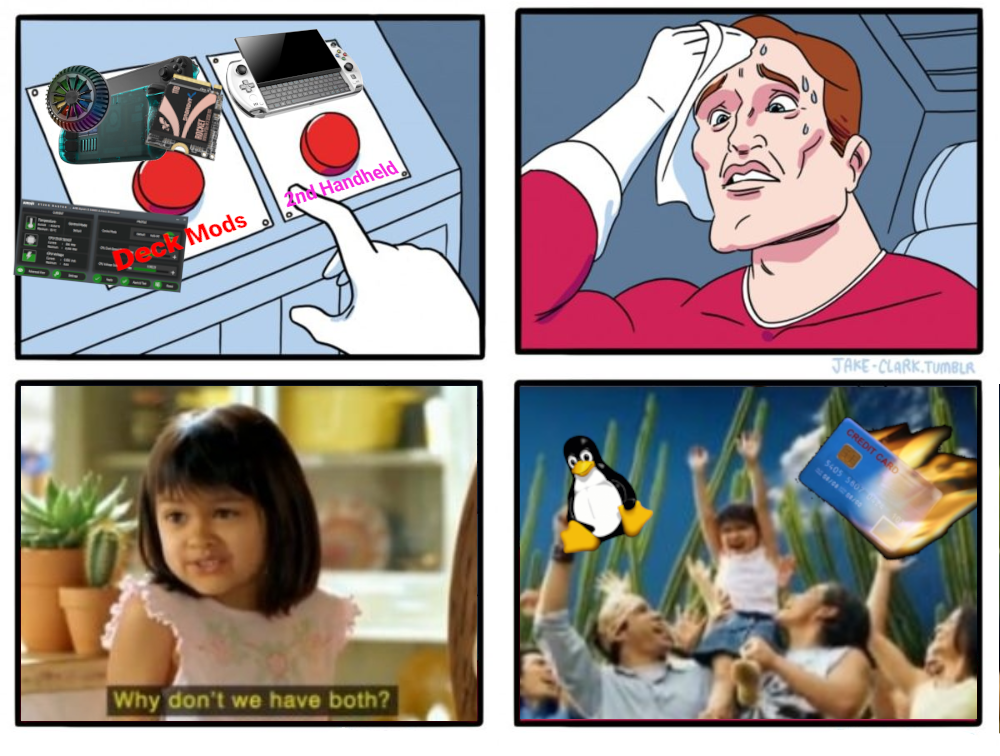

In It to Win It
Aside from Pokemon and (since the Pandemic) Minecraft, I haven't really been into gaming since high school.
But when I heard that some company called Spigot or something was selling a handheld cyberdeck with a respectable AMD APU and full non-Android Linux, I pulled out my wallet and begged them to "shut up and take my money."
I bought the Steam Deck because I've wanted a cyberdeck for decades.
But once I actually had the Deck in my hands, I found myself facing a contradiction. Yeah, I installed a bunch of development environments and desktop software. I made a point of using the Deck as a full-on laptop replacement, and I proved it could be done.
But at the end of the day, it was still a miserable experience, and the Deck proved to be an utter let-down as the cyberdeck I'd been dreaming of.
Hence this project! which I actually made some decent progress on in a VM (and I'll write that up eventually) to the point that I was ready for a test deployment.
But when I got out my thumb drive and got ready to burn the image... I hesitated.
Second Thoughts
I couldn't do it. I realized that with all the general-purpose computers in my life, SteamOS offered something nothing else did--the perfect distraction-free omni-console interface, that was so well optimized for playing games that I just couldn't bring myself to potentially mess that up.
Because I do play video games now! I buy way too many video games during Steam sales. I read video game reviews and pre-order titles from my favorite publishers. I spend hours tweaking my Steam Input layout... and then I play through the games using it!
And so, with that realization, I made some key decisions:
- I installed sway using Rwfus and added a Steam launcher for it so I could have a good multitasking WM available without having to log out
- Because I still do really want a cyberdeck, I bought a GPD Win 4
They had me at QWERTY
I was in love with the win4 from the announcement on kickstarter. I didn't give a fig about the faster processor or the RGB bumpers, and the smaller form factor was a negative for me and my ogre hands. But as someomne who purchased keyboard phones exclusively, starting with the original Android G1 and sticking with it all the way through years trying to keep my Samsung Galaxy S Relay alive (God, what a turd that thing was), I saw that fold-out keyboard and started stretching to perform the mental gymnastics I'd need to justify owning one alongside my Steam Deck.

Holo-Shed... For the Win?
The thing is, I have zero intention of daily-driving for Microsol again, so when my Win4 boarded its flight leaving Hong Kong, I knew it was time to dust off my Holo-Shed notes.
As of this writing, I've had my device for about a week and a half, and I'd say things are
going decently well. Case in point: I wrote this entire post and deployed it to github,
entirely on the device! I have hardware controls (via cpupower and ryzenadj working),
and input-remapper is letting me just
keep the controls in X-Input mode.
I've even played some games, though my ogre paws definitely cramp up trying to use the controls (there's a grip attachment I'm 3D printing right now that'll hopefully help).
So yes, Project Holo-Shed is still alive, and it's actually such a lovely experience I might actually go back and make a version for the Steam Deck after all!
But first, I'm going to need to dig into mangohud configs...